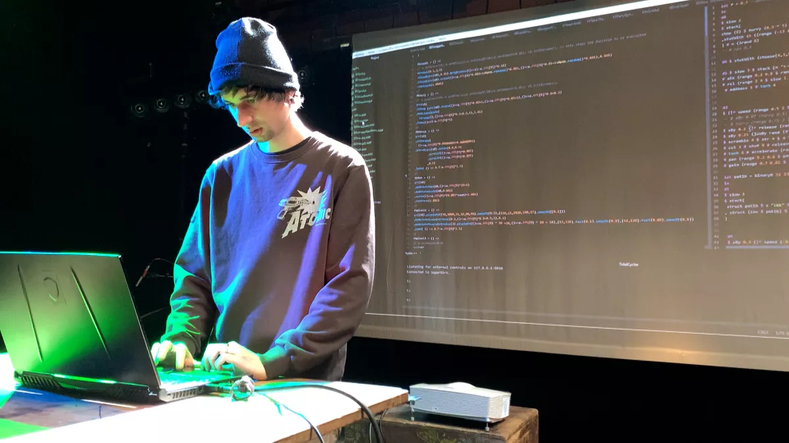
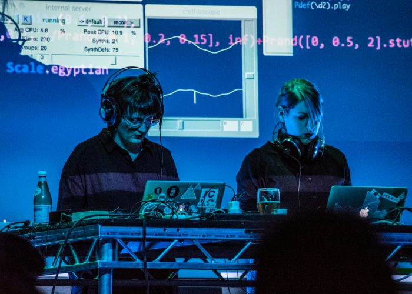
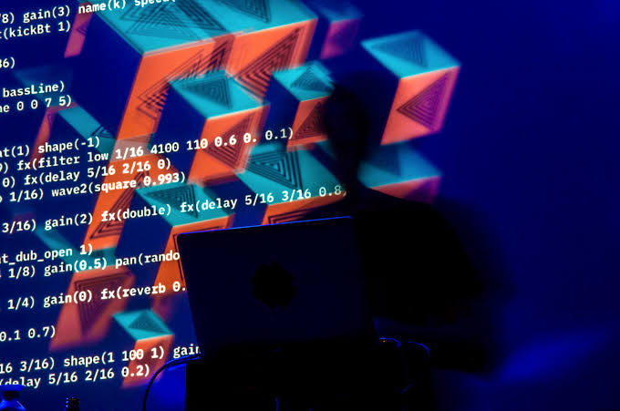

¿Qué es el Live Coding?

El Live Coding es una disciplina artística y tecnológica en la que una persona crea música, imágenes o animaciones escribiendo código en tiempo real frente a una audiencia. En lugar de utilizar únicamente controles gráficos o instrumentos tradicionales, el artista modifica el programa mientras este se está ejecutando, permitiendo que el público observe todo el proceso creativo. En el ámbito musical, el código se convierte en el instrumento. Cada línea escrita puede cambiar ritmos, melodías, efectos, sintetizadores o estructuras completas de una composición. Esto hace que cada presentación sea única e irrepetible. Actualmente existen diferentes herramientas para practicar Live Coding, como Strudel, TidalCycles, Sonic Pi, FoxDot, Orca, SuperCollider y Hydra, cada una enfocada en distintos estilos musicales o visuales.

El Live Coding utiliza lenguajes de programación diseñados para controlar eventos musicales o visuales. En lugar de escribir un programa completo y ejecutarlo al finalizar, el artista modifica constantemente el código mientras la música continúa sonando. Los cambios son inmediatos, permitiendo improvisar como lo haría un músico con un instrumento tradicional. Por ejemplo, una sola línea puede: Crear un ritmo de batería, Cambiar la velocidad de una canción, Añadir un sintetizador, Aplicar efectos como eco o reverberación y Generar melodías mediante algoritmos. Esta forma de trabajo convierte la programación en una herramienta artística.

El Live Coding une disciplinas que normalmente se consideran separadas comola Programación, Música, Matemáticas, Arte digital, Improvisación, Creatividad computacional También ha impulsado el desarrollo de nuevos lenguajes de programación especializados en creación artística y ha inspirado investigaciones sobre interacción humano-computador, inteligencia artificial aplicada al arte y educación en programación. Actualmente existen festivales internacionales dedicados exclusivamente al Live Coding, donde participan artistas, investigadores, músicos e ingenieros de todo el mundo.